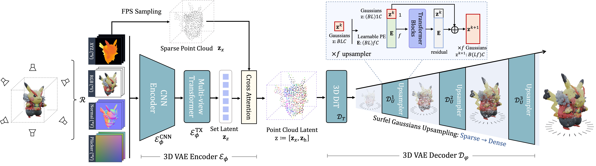

GaussianAnything: Interactive Point Cloud Latent Diffusion for 3D Generation
GaussianAnything generates high-quality and editable surfel Gaussians through a cascaded 3D diffusion pipeline, given single-view images or texts as the conditions.
While 3D content generation has advanced significantly, existing methods still face challenges with input formats, latent space design, and output representations. This paper introduces a novel 3D generation framework that addresses these challenges, offering scalable, high-quality 3D generation with an interactive Point Cloud-structured Latent space. Our framework employs a Variational Autoencoder (VAE) with multi-view posed RGB-D(epth)-N(ormal) renderings as input, using a unique latent space design that preserves 3D shape information, and incorporates a cascaded latent diffusion model for improved shape-texture disentanglement. The proposed method, GaussianAnything, supports multi-modal conditional 3D generation, allowing for point cloud, caption, and single/multi-view image inputs. Notably, the newly proposed latent space naturally enables geometry-texture disentanglement, thus allowing 3D-aware editing. Experimental results demonstrate the effectiveness of our approach on multiple datasets, outperforming existing methods in both text- and image-conditioned 3D generation.
Could internal representations from text-to-image diffusion models contribute to processing multiple, diverse images? We delve into the application of Stable Diffusion (SD) features for high-qualitysemantic and dense correspondence. Remarkably, our findings indicate that with straightforward post-processing, SD features can compete on a similar quantitative level as State-of-the-Art representations.
Based on the point-cloud structure 3D VAE, we perform cascaded 3D diffusion learning given text (a) and image (b) conditions. We adopt DiT architecture with AdaLN-single and QK-Norm. For both condition modality, we send in the conditional feature with cross attention block, but at different positions. The 3D generation is achieved in two stages (c), where a point cloud diffusion model first generates the 3D layout \(\mathbf{z}_{x,0}\), and a texture diffusion model further generates the corresponding point-cloud features \(\mathbf{z}_{h,0}\). The generated latent code \(\mathbf{z}_0\) is decoded into the final 3D object with the pre-trained VAE decoder.
Results for Image-conditioned 3D Generation.
We showcase the novel view 3D reconstruction of all methods given a single image from unseen GSO dataset. Our proposed method achieves consistently stable performance across all cases. Note that though feed-forward 3D reconstruction methods achieve sharper texture reconstruction, these method fail to yield intact 3D predictions under challenging cases (\eg, the rhino in row 2). In contrast, our proposed native 3D diffusion model achieve consistently better performance. Better zoom in.
Compared to existing 3D generation framework such as SDS-based (DreamFusion), mulit-view generation-based (MVDream, Zero123++, Instant3D) and feedforward 3D reconstruction-based (LRM, InstantMesh, LGM), GaussianAnything is an native 3D Diffusion framework. Like 2D/Video AIGC pipeline, GaussianAnything first trains a 3D-VAE and then conduct LDM training (text/image conditioned) on the learned latent space. Native 3D diffusion model shows better 3D consistency and higher success rate compared to feedforward 3D reconstruction model, as shown in the qualitative results above. We believe the proposed method has much potential and scales better with more data and compute resources, and yield better 3D editing performance due to its compatability with diffusion model.
Concurrently, several impressive studies also leverage native 3D diffusion for 3D object generation:
CLAY proposes a comprehensive 3D generation framework that supports flexible conditional 3D generation, and is the state-of-the-art 3D generative model that supports Rodin .
Direct3D proposes a native 3D diffusion model with high-quality surface generation. A hybrid conditional pipeline that leverages both CLIP and DINO features are employed.
Craftsman also proposes a multi-view conditioned 3D surface diffusion model, along with an interactive refinement pipeline.
LN3Diff, our previous work, generates triplane given text or image as the condition. However, it only supports up to 192x192 resolution output due to the costly volume rendering.
@article{lan2024ga,
title={GaussianAnything: Interactive Point Cloud Latent Diffusion for 3D Generation},
author={Yushi Lan and Shangchen Zhou and Zhaoyang Lyu and Fangzhou Hong and Shuai Yang and Bo Dai and Xingang Pan and Chen Change Loy},
eprint={2411.08033},
primaryClass={cs.CV},
year={2024}
}
Acknowledgements: We borrow this template from Dreambooth.